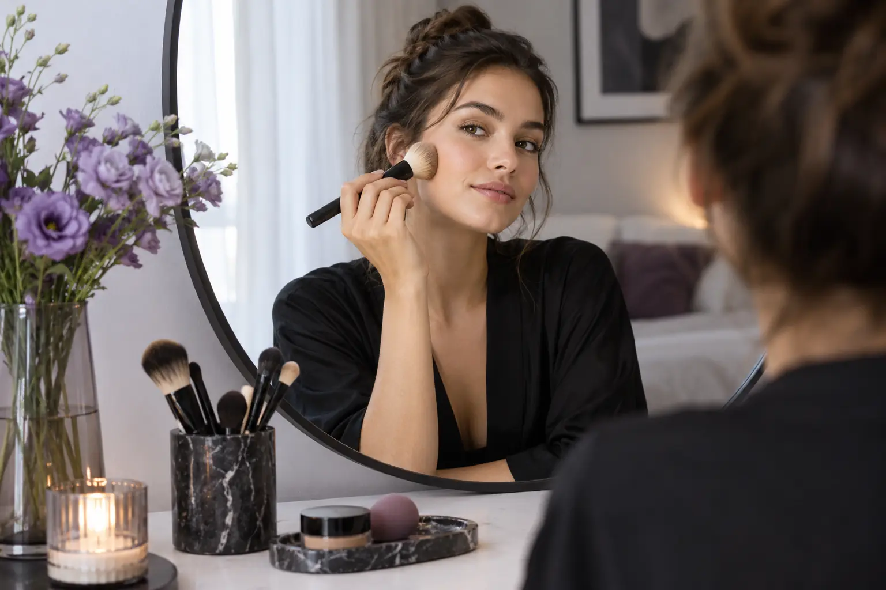

Asmeninė makiažo pamoka ar priemonių konsultacija: ką gaunate iš kiekvienos
Autorius: Madbeauty redakcija · Numatyta 2026 m. spalio 22 d. 16:00 (Lietuvos laiku)
Pamoka skirta mokytis atlikti makiažo veiksmus, o priemonių konsultacija – aiškiau atsirinkti ir naudoti produktus. Sužinokite, kaip palyginti jų apimtį ir pasiruošti.

jei norite išmokti pačios atlikti makiažo veiksmus, ieškokite pamokos, kurios apraše numatyta jūsų praktika ir grįžtamasis ryšys. Jei norite atsirinkti jau turimas ar planuojamas priemones, ieškokite konsultacijos, kur aiškiai nurodyta, kas vertinama ir ką gausite po susitikimo. Paslaugos pavadinimas negarantuoja konkrečios apimties: palyginkite užduotis, formatą, priemonių įtraukimą, trukmę ir kainą.
Mokymosi tikslas
Pamokoje svarbiausia tai, ką norite išmokti atlikti savarankiškai. Tikslas gali būti susidėlioti paprastą kasdienio makiažo eigą arba išmokti vieną konkretų veiksmą. Tai tik pavyzdžiai tikslui nusakyti, o ne pažadas, kad kiekviena pamoka juos apima. Prieš pasirinkdama paslaugą, paklauskite, ar specialistas demonstruoja veiksmus, ar juos atliekate pati, ir ar numatytas grįžtamasis ryšys.
Priemonių atranka ir praktika
Šios paslaugos gali persidengti, todėl vertinkite numatytą rezultatą, o ne vien pavadinimą. Per pamoką priemonių pasirinkimas gali būti mokymosi dalis, o konsultacijoje gali būti aptariama ir jų naudojimo eiga. Ką konkrečiai gausite, priklauso nuo teikėjo pasiūlymo.
- Pamoka: išsiaiškinkite, ar praktikuosite pati, ar tik stebėsite demonstraciją; ar galima atsinešti savo priemones; ar paaiškinama jų naudojimo seka.
- Priemonių konsultacija: patikrinkite, ar aptariamos jūsų jau turimos priemonės, ar sudaromas pasirinkimo sąrašas, ar paaiškinama, kaip priemones naudoti.
- Abiem atvejais: paklauskite, ar pateikiamos konkrečios rekomendacijos ir ar į susitikimą įtrauktas priemonių įsigijimas. Nepirkite papildomų produktų vien pagal paslaugos pavadinimą.
Pamokos ruošimas bei tęsinys
Prieš registruodamasi vienu sakiniu užrašykite, kokį rezultatą norite pasiekti. Taip bus lengviau palyginti skirtingų teikėjų pasiūlymus ir įvertinti, ar numatyta veikla atitinka jūsų tikslą.
- Noriu išmokti: įrašykite vieną konkretų makiažo veiksmą arba bendrą eigą.
- Dabar naudoju: pasižymėkite priemones, kurias norėtumėte aptarti, arba paklauskite, ką verta atsinešti.
- Po susitikimo noriu turėti: pavyzdžiui, pačios išbandytą veiksmų seką, priemonių sąrašą ar paaiškinimą, kaip naudoti jau turimus produktus. Patikrinkite, ar toks rezultatas įtrauktas.
- Tęsinys: paklauskite, ar yra galimybė vėliau patikslinti planą ir ar už tai taikomos atskiros sąlygos.
Asmeninė makiažo pamoka: metodo paskirtis ir konkreti paslaugos apimtis
Pamoką verta rinktis, kai svarbiausias tikslas – išmokti veiksmus ir juos išbandyti pačiai. Prieš susitikimą išsiaiškinkite, ar pamoka pritaikoma jūsų užduočiai, kokią dalį atliksite pati ir ar gausite paaiškinimą arba grįžtamąjį ryšį. Vien žodis „asmeninė“ nepasako, kiek praktikos ar kokių priemonių bus įtraukta.
Iliustracinis pavyzdys: jei norite ryte savarankiškai atlikti kelis makiažo žingsnius, rinkitės tokį pasiūlymą, kuriame aiškiai numatyta jūsų praktika. Prieš registruodamasi patikrinkite, ar aptariama būtent jūsų pasirinkta užduotis.
Makiažo priemonių konsultacija: metodo paskirtis ir konkreti paslaugos apimtis
Konsultaciją verta svarstyti, kai pagrindinis klausimas yra ką pasirinkti arba kaip naudoti tai, ką jau turite. Pasitikrinkite, ar teikėjas aptaria jūsų turimus produktus, ar siūlo atrankos kriterijus, ar paaiškina naudojimo tvarką. Jei tikitės konkretaus sąrašo, iš anksto paklauskite, ar jis pateikiamas ir kokia informacija jame būna.
Iliustracinis pavyzdys: jei norite susiaurinti turimų priemonių pasirinkimą, ieškokite konsultacijos, kurios apraše aiškiai nurodyta, kad bus aptariami jūsų produktai ir jų paskirtis. Jei norite išmokti juos naudoti praktiškai, pasitikrinkite, ar pasiūlyme yra ir pamokos dalis.
Kaip palyginti pasiūlymus prieš pasirenkant
- Numatytas rezultatas: ko konkrečiai išmoksite arba kokį priemonių pasirinkimą aptarsite?
- Formatas: ar pati atliksite veiksmus, ar daugiausia klausysitės paaiškinimo?
- Priemonės: ar atsinešate savas, ar jos suteikiamos, ar rekomendacijos susijusios su įsigijimu?
- Apimtis: kiek laiko skiriama praktikai, o kiek – aptarimui? Patikrinkite teikėjo nurodytą trukmę ir kainą.
- Tęsinys: ar įtrauktas klausimų aptarimas po susitikimo, ar tam taikomos atskiros sąlygos?
Jei dar svarstote, kokio pobūdžio grožio paslauga atitinka jūsų tikslą, pradėkite nuo bendro grožio paslaugos pasirinkimo gido; jis padės susidėlioti tikslą, kategoriją ir vizito planą.Kai aišku, kad ieškote vieno iš šių mokymosi formatų, Madbeauty kataloge galite peržiūrėti asmeninės makiažo pamokos pasirinkimą arba makiažo priemonių konsultacijos pasirinkimą ir atskirai pasirinkti miestą. Katalogo pasirinkimas negarantuoja, kad tame mieste yra aktyvių teikėjų ar laisvų laikų; registraciją ir sąlygas reikia patvirtinti su teikėju.